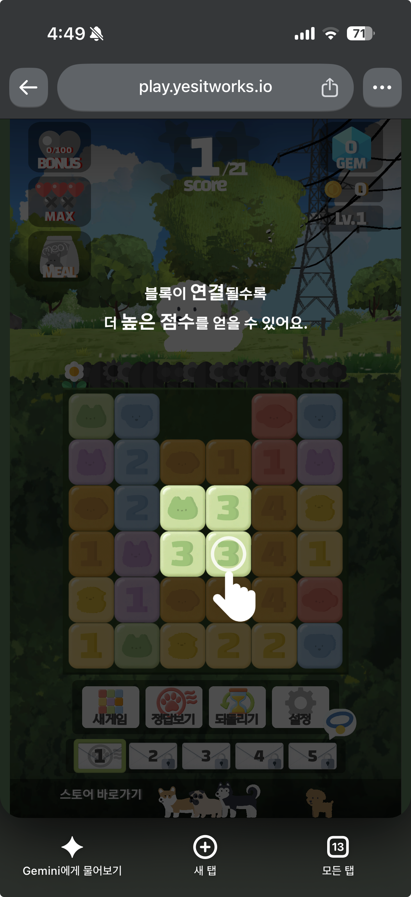
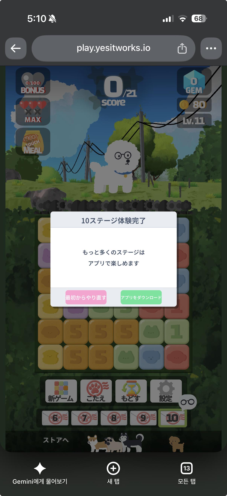

작업 목표
「흰둥이는 퐁퐁퐁」은 Unity 6 와 MagicOnion 게임 서버로 서비스 중인 모바일 퍼즐게임이다. 마케팅용으로 브라우저에서 10스테이지까지 바로 플레이할 수 있는 체험판을 만들고 싶었다. 조건은 세 가지였다. 체험판 작업이 모바일 빌드에 영향을 주면 안 된다. 서버 없이 돌아야 한다. 그리고 체험판 끝에서 앱 설치로 이어져야 한다. 작업은 로컬 Claude Code 로 하고 Claude와 대화하며 매 단계 지시문과 보고서 형식을 정했다.
작업 결과
감사 → 빌드 관통 → 서버 스텁 → 스테이지 로컬화 → 체험판 UI → 애널리틱스와 Release 프로파일 → 배포의 순서로 진행했다. 단계마다 지시문을 보내고 정해진 형식의 보고서를 받아 다음 지시문을 썼다. 빌드와 브라우저 확인은 Claude Code 가 혼자 반복했고 사람은 결정과 UI 작업과 실기기 확인을 맡았다.


예외 스택트레이스 제거, 스트리핑 상향, Brotli 압축으로 전송량이 12분의 1이 됐다. 실제 도메인에서 첫 로딩은 약 7초다.
모든 변경은 #if UNITY_WEBGL 과 #if DEMO_BUILD 안에 있거나 새 파일이다. 모바일 빌드가 읽는 코드는 그대로다.
headless Chromium 이 매 빌드마다 10스테이지를 클리어하고, 건너뛰기와 실패와 새로고침 뒤 진행도 유지까지 확인한다. C# 예외 1건이면 FAIL 이다.
첫날 10:26 에 계획을 세워 23:49 에 Release 빌드가 나왔고, 둘째 날 16:02 에 play.yesitworks.io 가 떴다. 커밋 15개.
고치기 전에 지도를 그린다
첫 지시문은 "코드를 수정하지 말고 조사만 해라"였다. 플랫폼 SDK 참조 지점, WebGL 에서 안 도는 코드(스레드, 동기 블로킹), 서버 호출 지점과 그중 없으면 게임이 멈추는 것, 에셋 규모, Spine 셰이더, 입력 코드를 표로 받았다. 이 감사 보고서가 이후 모든 지시문의 근거가 됐다.
추상화 없음
로그인, 소셜, 결제, 푸시, 광고 전부 인터페이스가 없었다. AppServices.Instance.X 싱글턴에 AddComponent 로 붙는 구조라, 인터페이스를 새로 뽑는 대신 "같은 클래스명과 같은 public 시그니처의 빈 구현"으로 교체하기로 했다.
서버 대기 지점 9개
앱 시작부터 첫 플레이까지 RPC 6개, CDN 다운로드, 원격 Addressables 스테이지 로드가 순서대로 걸려 있었다. 모든 RPC 는 연결 실패 시 0.5초 간격 무한 재시도였다. 스텁으로 대체할 인터페이스는 IAccountService 7개, IAuthService 2개 메서드로 좁혀졌다.
확인한 사실과 추측의 구분
보고서의 모든 항목에 [확인] / [추측] 을 붙이게 했다. 나중에 "스테이지 로드 실패는 CORS"라는 추측이 틀린 것(실제는 500)으로 드러났을 때, 추측이라고 표기돼 있어 바로 정정할 수 있었다.
빌드가 돌아가는 상태를 먼저 만들고, 그 상태를 유지하며 깎는다
기능 제거부터 시작하면 뭘 빼야 하는지 모른 채 삽질하게 된다. 그래서 심볼만 넣고 batchmode 빌드를 한 번 돌려 실제 오류 목록부터 받았다. 28초 만에 에디터 컴파일에서 막혔고, 그 뒤로는 "빌드 → 오류 → 격리 → 빌드"를 Claude Code 가 혼자 돌렸다.
심볼 분기 누락
#if UNITY_ANDROID / #elif UNITY_IOS 안에서만 선언된 변수. #else 한 줄로 통과.
Firebase 참조
서비스 클래스 전체를 #if !UNITY_WEBGL 로 감싸고 #else 에 빈 구현. 서드파티 asmdef 는 WebGL 제외.
네이티브 심볼 19종
GoogleSignIn 의 DllImport("__Internal"). 서드파티 소스 대신 .jslib 빈 함수로 링크 통과.
첫 빌드 성공
3분 6초. 브라우저에서 인트로의 null 채널 접근이 메모리 오류로 나타났다. 여기서부터 런타임 단계.
두 개의 심볼
플랫폼 격리는 Unity 가 자동 정의하는 UNITY_WEBGL 로, 체험판 범위(스테이지 상한, 버튼 숨김, 인트로 우회)는 기존 PRODUCTION_BUILD / STAGE_BUILD 관례에 맞춘 DEMO_BUILD 로 나눴다. 전자는 빠뜨릴 수 없고, 후자는 나중에 다른 타깃에도 적용할 수 있다.
서드파티 폴더는 건드리지 않는다
Firebase, GoogleSignIn, Spine 폴더 안의 소스는 수정 금지로 두고 asmdef 제외와 jslib 스텁만 허용했다. 업데이트 때 변경이 덮어씌워지는 것을 막기 위해서다. 이 규칙은 CLAUDE.md 의 절대 규칙에 들어갔다.
link.xml 이 삭제된다. 작업 시작 때 작업 트리에 있던 "삭제된 link.xml"의 정체가 이것이었다.채널 생성부 세 곳만 바꾼다
서버 스텁의 위치는 MagicOnionClient.Create<T>() 를 부르는 세 곳이다. 그 위 계층(UserAuthService, UserAccountService)은 시그니처를 그대로 두어 콘텐츠 코드는 자기가 스텁과 대화하는지 모른다. 스텁은 IAuthService, IAccountService 를 그대로 구현하고 UnaryResult.FromResult 로 값을 돌려준다.
체험판 경제
하트는 항상 최대치에 감소 없음, 플레이 · 건너뛰기 · 되돌리기 비용은 0, 클리어 보상은 고정 8개. 서버가 권위적으로 하던 추첨과 재화 로직은 재현할 이유가 없었다. 체험판은 "막힘 없이 10판"이면 된다.
보상 0 이면 진행이 멈춘다
처음 스텁은 재화를 그대로 돌려줘 보상이 0개였다. 클라이언트는 보상 상자를 눌러 남은 개수가 정확히 0이 되는 순간에만 다음 스테이지로 넘어가서, 0개면 빈 목록에서 꺼내려다 예외가 났다. 빌드 전에 코드에서 찾아 고쳤다.
챕터 보상이 한 칸 밀린 이유
직접 플레이하니 5스테이지 목걸이가 안 나오고 10스테이지에서 안경 팝업에 목걸이가 지급됐다. 스텁의 StagePerChapter 추측값(10)이 운영 값(5)과 달라 서버 스텁과 클라이언트의 챕터 계산이 어긋난 것이었다. 운영 설정값은 초기에 확보해야 한다.
WebGLDemo/Resources/ 에 복사하고 로드 함수 두 개를 #if DEMO_BUILD 로 분기했다. 그 뒤로는 Addressables API 호출이 하나도 남지 않아 초기화 자체가 일어나지 않는다.브라우저가 매 빌드를 10판씩 깬다
런타임 단계부터는 "빌드 → 브라우저 확인" 루프에 사람이 끼면 느려진다. Playwright 로 headless Chromium 을 띄워 콘솔을 수집하는 smoke 스크립트를 먼저 만들고, Development 빌드 전용 디버그 브리지를 두어 JS 에서 unityInstance.SendMessage 로 게임을 조작하게 했다.
부팅 확인
2-4SwiftShader 소프트웨어 렌더링으로 WebGL 2.0 컨텍스트를 만들고, 씬 로드 마커가 찍히거나 60초가 지나면 스크린샷과 콘솔을 저장한다. 첫 실행에서 사람이 붙여준 것과 같은 메모리 오류를 5.7초 만에 잡아 자동 확인이 동작함을 증명했다. 예외 지원을 Full With Stacktrace 로 올려 메모리 오류 대신 C# 예외와 메서드 이름이 나오게 했다.
playthrough
2-5브리지의 ClearCurrentStage 는 점수를 클리어 조건으로 올린 뒤 실제 결과 처리를 탄다. 클리어 팝업 확인, 보상 상자 클릭, 다음 스테이지 로드까지 실제 코드 경로다. 10회 반복해 최대 레벨 도달을 확인하고, 3스테이지 클리어 → 새로고침 → 진행도 유지도 검사한다. 한 회차 4.2초.
실제 UI 클릭
2-7 · 2-8건너뛰기는 "정답보기" 버튼부터 실제 UI 를 1.2초 간격으로 눌러 블록이 8번에 걸쳐 하나씩 터지는 연출까지 통과시킨다. 실패는 점수 0으로 결과 처리를 태워 실패 팝업과 재시작을 본다. 완주 팝업과 홈의 스토어 버튼은 실제 클릭으로 열린 창 수(정확히 1개)와 URL 을 확인한다.
FAIL 조건
- C# 예외 1건 이상 (의도적
[WebGLDemo]로그 제외) - 원격 요청이 1건이라도 남아 있음 (RemoteProviderException)
- 스토어가 2개 이상 열림
- GA 요청은 차단하고 URL 만 기록 (테스트가 통계에 섞이지 않게)
브라우저는 번들 Chromium 이 아니라 설치된 Chrome
Playwright 번들 Chromium 은 AAC/MP3 코덱이 없어 오디오 디코딩 오류가 페이지 오류로 잡혀 대기를 끊었다. 게임 문제가 아니라 브라우저 문제라, 기본 브라우저를 설치된 Google Chrome(headless)으로 바꿨다. 언어 3종과 Android UA 는 옵션으로 돌린다.
Cloudflare 가 Brotli 를 한 번 더 압축했다
Release 프로파일은 Development 끔, 예외 지원 최소, Brotli, 스트리핑 Low 다. 가장 큰 파일이 16MB 라 Cloudflare 의 25MiB 단일 파일 제한 안에 들었다. 배포는 wrangler 직접 업로드로 했다. Git 연동은 Cloudflare 가 리포를 받아 빌드하는 방식이라 Unity 빌드를 할 수 없다.
| 순서 | 일어난 일 |
|---|---|
| Pages 프로젝트 생성 | 최신 wrangler 가 pages project create 를 Workers 정적 에셋으로 넘겨 빌드 폴더를 통째로 Worker 에 올렸다. 승인 범위 밖의 배포였지만 workers.dev 서브도메인이 없어 외부에서 열리지 않았다. Pages 는 유지보수 모드라 Workers 로 전환하기로 했다. |
| 깨끗한 재배포 + 도메인 | wrangler.jsonc 에 커스텀 도메인을 적으니 같은 계정의 존이라 DNS 레코드와 인증서가 자동으로 생겼다. 그러나 .br 세 파일이 이중 압축돼 부팅 실패. 받은 파일을 한 번 풀면 아직 Brotli 였다. |
Cache-Control: no-transform | 헤더는 붙었지만 여전히 이중 압축. Workers 정적 에셋에서는 통하지 않았다. |
| 압축 해제 폴백 | 파일을 .unityweb 으로 바꿔 중간 프록시가 압축 파일인 줄 모르게 하고 Unity 로더가 JS 로 푼다. 로컬 기준 +0.3~0.5초. 어떤 호스팅에서든 동작한다. 재빌드 · 재배포 후 부팅 성공. |
캐시 없는 첫 방문, 25.8MiB 다운로드 포함. 로컬에서는 4.9~5.1초였다.
배포 한 명령
scripts/deploy.sh 가 Release 빌드부터 업로드까지 한다. --skip-build, --dry-run 옵션. 체험판에 불필요한 StreamingAssets 설정 파일은 빌드 결과에서 지운다.
스토어 링크
App Store 는 App Store Connect 캠페인 링크(ct=webdemo), Play 는 referrer=utm_source%3Dwebdemo. 완주 팝업과 홈 하단 버튼 둘 다 OS 판별 후 손을 떼는 브라우저 이벤트 안에서 window.open 을 불러 팝업 차단을 피한다.
해보고 알게 된 것
문서로는 알 수 없고 빌드와 배포를 돌려 봐야 아는 것들이다.
빌드 루프는 생각보다 싸다
Unity 6 WebGL Development 빌드가 M5 Pro 에서 2분 45초, Release 가 5분이었다. 걱정했던 전체 에셋 재임포트는 없었다. 루프가 싸면 "일단 빌드해서 오류 목록을 받는다"가 가장 빠른 조사 방법이 된다.
WebGL 의 null 은 메모리 오류다
예외 지원이 기본값이면 null 검사가 생략돼 NullReferenceException 대신 memory access out of bounds 가 나온다. Development 빌드에서는 Full With Stacktrace 를 켜야 메서드 이름이 보인다. wasm 이 152MB 에서 279MB 로 커지지만 디버깅 시간이 훨씬 줄었다.
브라우저는 HTTP+LAN 에서 Brotli 를 거부한다
폰 테스트용 LAN 서버에서 .br 이 ERR_CONTENT_DECODING_FAILED 로 깨졌다. Brotli 는 HTTPS 나 localhost 에서만 받는다. 로컬 서버가 브라우저의 Accept-Encoding 을 보고 압축 푼 사본을 내려주게 했다.
첫 터치 전에는 소리가 안 난다
브라우저 자동재생 정책이다. 인트로 BGM 이 첫 터치 전에 안 들리는 것은 감수하기로 했다. 홈에서 어차피 터치해야 게임이 시작된다.
씬은 모바일과 공유된다
체험판용으로 씬에서 상점 버튼을 끄면 모바일에서도 사라진다. 체험판 UI 변경은 코드의 SetActive(false) 를 #if DEMO_BUILD 로 두는 쪽이 안전하고, 프리팹 레이아웃은 Vertical Layout Group 으로 비활성 항목이 빠지게 하면 양쪽에 맞는다.
텍스처 4장이 12MB 절감을 지웠다
체험판에 안 쓰는 챕터 보상 이미지 두 장을 빌드에서 뺐는데 .data 가 오히려 늘었다. 그 사이 UI 다듬기로 넣은 2048×2048 장식 그림 4장이 각 4.2MB 였다. 임포트 설정 한 줄의 영향이 코드 작업보다 크다.
--dry-run. wrangler pages project create 가 프로젝트 생성에 그치지 않고 배포까지 해버렸다. 접속되지 않는 주소라 피해는 없었지만, 승인 흐름이 명령 이름의 의미에 기대고 있었다는 뜻이다. 공개 범위를 바꾸는 명령은 "무엇을 올릴지"를 먼저 보여주는 옵션으로 확인한 뒤 실행하도록 지시문을 바꿨다.지시문과 보고서 사이에서
작업은 두 세션으로 나뉘었다. 이 대화는 단계마다 지시문을 쓰고, ---- REPORT START ---- 와 ---- REPORT END ---- 사이의 보고서를 받아 다음 지시문을 썼다. 로컬 Claude Code 는 지시문을 받아 빌드, smoke, 수정을 반복했다. 허용된 수정 패턴과 멈춤 조건을 지시문에 명시해 자율 루프를 주되, 게임 로직이나 씬에 닿는 수정은 멈추고 보고하게 했다.
AI 에이전트가 맡은 일
- 리포 감사와 의존성 지도, 단계별 공수 추정
- batchmode 빌드 스크립트와 Release 프로파일, 빌드 부산물 복원
- 플랫폼 SDK 격리, 서버 스텁, 인트로 우회, 스테이지 로컬화
- Playwright smoke 와 디버그 브리지, 10스테이지 자동 완주
- 세로 캔버스 템플릿, 완주 팝업, 스토어 링크 jslib, GA4 이벤트
- Cloudflare 배포, 이중 압축 진단과 폴백 전환
- CLAUDE.md 에 알게 된 사실을 누적
사람이 직접 한 일
- MagicOnion 제외, 체험판 경제, 호스팅, 애널리틱스 등 제품 결정
- 운영 설정값(StagePerChapter 5) 제공
- 10스테이지 직접 플레이, 챕터 보상 버그 발견
- 설정 팝업 정리, 설정 버튼 이동, 하단 스토어 버튼과 장식 그림 (에디터)
- GA4 웹 스트림, App Store Connect 캠페인 링크 발급
- 폰에서 터치 · 오디오 · 스토어 링크 확인
- wrangler 로그인 승인, 배포 전 확인
Logger.Log 는 WebGL 에서 컴파일되지 않는다" 같은 발견을 한 줄씩 더했다. 세션이 바뀌어도 같은 실수를 반복하지 않는 장치다.지우지 않고 격리하면 포팅은 되돌릴 수 있다
체험판 브랜치의 모든 변경은 조건부 컴파일 안이거나 새 파일이다. 심볼을 빼면 모바일 코드가 그대로 돌고, 씬 변경 두 건만 머지 전에 정리하면 된다. 서버 스텁은 인터페이스를 그대로 구현해서, 나중에 실제 서버를 붙이고 싶으면 채널 생성부 세 곳의 분기만 되돌리면 된다.
이번 작업의 진행 순서
감사 (수정 없이 조사만, 확인 / 추측 구분)
↓
심볼 + batchmode 빌드로 실제 오류 목록 확보
↓
플랫폼 SDK 격리 (#if, asmdef 제외, jslib 스텁) → 첫 빌드 성공
↓
smoke 자동화 → 서버 스텁 → HomeScene 진입
↓
스테이지 로컬화 → 디버그 브리지 → 10스테이지 자동 완주
↓
체험판 UI · 완주 팝업 · 스토어 링크 · GA4
↓
Release 프로파일 → Cloudflare Workers → play.yesitworks.io배포 과정에서 바뀐 코드는 압축 설정 한 줄과 헤더 파일뿐이었다. 게임 코드는 배포 단계에서 한 줄도 바뀌지 않았다.
313MB 개발 빌드에서 시작해 Brotli 와 스트리핑으로 줄였다. 모바일 회선에서의 체감은 GA4 로 보게 된다.
3줄 요약
- 로그인 · 결제 · 푸시 · 광고 · 게임 서버가 다 들어 있는 Unity 프로젝트에서 기존 코드 경로를 바꾸지 않고
#if격리와 jslib 스텁만으로 WebGL 빌드를 통과시켰고, 서버는 인터페이스를 그대로 구현한 PlayerPrefs 스텁으로 대체했다. - headless Chromium 이 매 빌드마다 10스테이지를 자동 완주하며 예외 · 원격 요청 · 스토어 창 수를 검사하게 해, 사람은 결정과 UI 다듬기와 실기기 확인만 했다.
- 313MB 개발 빌드를 25.8MB 로 줄여 Cloudflare Workers 에 올렸다. 이중 압축 문제는 Unity 압축 해제 폴백으로 풀었고, play.yesitworks.io 에서 7초에 뜬다.